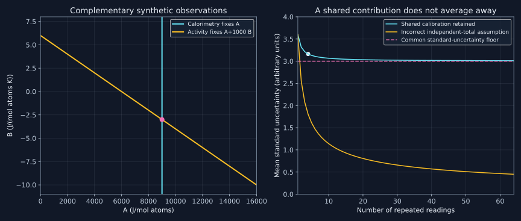

17. Thermodynamic assessment: data, measurements and inverse constraints
A thermodynamic assessment is an inverse problem. We observe heat, voltage, vapor, diffraction, phase compositions and transformation events, then seek Gibbs-energy functions consistent with all of them. Each observation constrains a different derivative or equilibrium condition. More measurements help only when their references, measurement models and uncertainties are understood.
17.1 Choose a measured quantity before choosing a fit
Lesson 36, 0:55–12:20. Topic span; corrections, synthetic constructions and complete derivations are explained separately.
A measurement is not generally a direct point on a Gibbs-energy curve. Isobaric calorimetry constrains enthalpy; vapor or a reversible electrochemical cell constrains a chemical potential; a tie line constrains two chemical potentials in two phases. Each needs a forward map from proposed model parameters to the observable. Fitting a smooth curve through an arbitrary collection of numbers without these maps mixes different physical quantities.
For a binary homogeneous phase with atomic mole fraction $x=x_B$, write its molar excess energy as the deliberately small model
$$g^{\rm ex}(T,x)=x(1-x)(A+BT).$$Here $A$ has units J/mol atoms and $B$ J/(mol atoms K). Taking derivatives at fixed composition gives
$$s^{\rm ex}=-x(1-x)B,\qquad h^{\rm ex}=g^{\rm ex}-Tg_T^{\rm ex}=x(1-x)A,\qquad c_p^{\rm ex}=0.$$Every enthalpy measurement in this model constrains $A$ and leaves $B$ completely invisible. Repeating perfect calorimetry at more compositions cannot remove that null direction. It can test the assumed composition shape, but it cannot identify a parameter absent from the observable. An activity measurement instead constrains $A+BT$ and can supply complementary information.
The distinction is structural identifiability, not merely a large error bar. A numerical optimizer can print a value for an unconstrained parameter because of its starting value, bounds or a prior; this does not turn the parameter into a calorimetric inference. More complex models can have nearly invisible combinations rather than exactly invisible individual parameters. Sensitivity and rank checks should precede confidence in fitted coefficients.
The lecture names separate files for observations, setup, optimization and the final database. Their extensions depend on the commercial workflow and version. The scientific separation is durable: retain original data and provenance, specify phase models and conventions, perform an assessment, and export evaluated descriptions. A TDB is the resulting model representation, not a substitute for the observations and decisions that produced it.
17.2 Calorimetry: the boundary conditions determine the quantity
Lesson 36, 12:55–17:58. Topic span; corrections, synthetic constructions and complete derivations are explained separately.
Use the convention $\Delta U=q+w_{\rm on}$. In a closed system with only pressure–volume work, $w_{\rm on}=-\int P_{\rm ext}\,dV$. At constant pressure with mechanical equilibrium at the endpoints, the measured heat is $\Delta H$ under the usual corresponding boundary conditions. At constant volume, pressure–volume work vanishes and the heat is $\Delta U$. Other work, exchange of matter, incomplete reaction and instrumental corrections must be accounted for separately.
A bomb calorimeter is a constant-volume instrument. Calling its heat a reaction enthalpy without correction is generally wrong. For ideal gases with negligible condensed-phase $PV$ changes, the reaction quantities obey
$$\Delta_r H=\Delta_r U+\Delta n_g RT.$$For the original example $\Delta_r U=-100$ kJ/mol reaction, $\Delta n_g=-1$ and $T=298.15$ K, the enthalpy is $-102.478957$ kJ/mol reaction. The distinction is modest in some reactions and essential in others. The reaction equation and its extent define what “per mole” means.
A differential scanning calorimeter can measure sensible-heat and transformation contributions after calibration, baseline subtraction and separation of kinetic effects. Within one phase at fixed pressure and composition, $dh=c_p\,dT$. Across a first-order transformation, include its latent heat rather than integrate only the smooth single-phase heat capacities. An observed peak temperature, onset temperature and integrated peak area are different derived quantities and need different uncertainty models.
Solution calorimetry provides an especially useful sign audit. Suppose one mole of AB dissolves into a solvent to reach the same final dilute state as separately dissolving one mole A and one mole B. Let the signed dissolution enthalpies be $q_{AB}$, $q_A$ and $q_B$, positive for heat absorbed by the reacting system. The two paths are
$$A+B\longrightarrow AB\longrightarrow{\rm common\ final\ solution}, \qquad A+B\longrightarrow{\rm common\ final\ solution}.$$Hess's law gives
$$\Delta_f H(AB)+q_{AB}=q_A+q_B,\qquad \Delta_f H(AB)=q_A+q_B-q_{AB}.$$The recording's verbal “product minus reactants” subtraction for dissolution heats reverses this sign if the heats are defined as above. A laboratory convention that reports heat evolved as positive needs conversion first. Equal final solution states, stoichiometric amounts and solvent dilution conditions are necessary: otherwise an extra mixing/dilution correction remains. With $q_A=-8$, $q_B=-12$ and $q_{AB}=-5$ kJ for those amounts, formation is $-15$ kJ/mol AB.
Normalization matters independently of sign. A value of $-90$ kJ/mol formula for AB₂ is $-30$ kJ/mol atoms, with $x_B=2/3$. One cannot combine a formula-unit enthalpy with an atomic-mole solution model before converting its amount basis. References must also specify which structures and magnetic states of the elements were used.
17.3 Activities from vapor and voltage
Lesson 37, 1:09–7:19. Topic span; corrections, synthetic constructions and complete derivations are explained separately.
For a specified standard state, $\mu_B-\mu_B^\circ=RT\ln a_B$. Under equilibrium with an ideal monatomic vapor, measuring the same vapor species above an alloy and a pure reference at the same temperature gives $a_B=p_B/p_B^\circ$. With nonideal gas behavior, fugacities replace pressures. Molecular association, dissociation and different vapor species require their reaction equilibria; total vapor pressure is not automatically the partial pressure of component B.
Static manometry or optical absorption measures a vapor observable in a closed or controlled system. Effusion mass spectrometry infers a species pressure from an ion signal under a validated molecular-flow and instrumental model. Ionization cross sections, detector response, fragmentation and reference calibration matter. Isopiestic equilibration compares samples through a common vapor chemical potential. The lecture's overview introduces these routes; it does not remove their calibration and equilibrium requirements.
For a reversible electrochemical cell and a completely specified reaction transferring $n$ electrons per reaction event, $\Delta_r G=-nFE$ with voltage orientation chosen for that reaction. Define our synthetic transfer reaction as moving one mole B from its pure standard state into the alloy, with a two-electron coupling. Then
$$RT\ln a_B=-2FE,\qquad a_B=\exp[-2FE/(RT)].$$Reversing the cell reaction reverses both $\Delta_rG$ and E. The electron number is a stoichiometric number, not a freely adjustable scale. An open-circuit reading is thermodynamic evidence only when reversibility, ionic selectivity, absence of parasitic reactions and appropriate equilibrium have been established.
In the regular-solution example, partial differentiation gives
$$\mu_B^{\rm ex}=(1-x)^2(A+BT),\qquad \ln\gamma_B=\frac{(1-x)^2(A+BT)}{RT},\qquad a_B=x\gamma_B.$$At $x=0.3$, $T=1000$ K, $A=9000$ J/mol and $B=-3$ J/(mol K), the program gives $h^{\rm ex}=1890$ J/mol and $a_B=0.427255929$. The oriented voltage is 0.036639698 V. Enthalpy first yields $A=h^{\rm ex}/[x(1-x)]$, and activity then yields
$$B=\frac{1}{T}\left[\frac{RT\ln(a_B/x)}{(1-x)^2}-A\right]=-3\ {\rm J/(mol\,K)}.$$This is an exact inversion of stipulated synthetic observations. It is not an uncertainty estimate or a fit of real activity data.
The fixed-temperature, fixed-pressure Gibbs–Duhem relation is
$$(1-x)d\mu_A+x\,d\mu_B=0.$$It determines the derivative of one partial quantity from the other, not its integration constant. For this model, $\mu_B^{\rm ex}=L(1-x)^2$ with fixed $L=A+BT$ gives $d\mu_A^{\rm ex}/dx=2Lx$, hence $\mu_A^{\rm ex}=Lx^2+C$. The pure-A excess reference fixes C to zero. Differentiating noisy experimental data and integrating it can accumulate error; a derived counterpart is correlated with its parent data and must not be counted as an independent experiment.

17.4 Atomistic calculations are informative observations with conventions
Lesson 37, 7:19–23:48. Topic span; corrections, synthetic constructions and complete derivations are explained separately.
A zero-temperature electronic energy calculation supplies a constrained structural-state energy. It does not automatically supply the Gibbs energy of an arbitrary finite-temperature specimen. A typical formation-energy comparison subtracts consistently computed elemental reference energies from a compound energy, with matching atom counts and computational settings. A pressure–volume contribution, zero-point motion, vibrational, electronic, magnetic and configurational contributions can matter depending on the state and conditions.
Force balance is necessary for a relaxed structure but not sufficient for thermodynamic stability. A stationary energy can be a saddle; a locally mechanically stable structure can still lie above a decomposition envelope. A composition–energy convex hull compares the candidate phases that were actually included, under its chosen approximations. It is not proof that every competing phase or finite-temperature contribution has been exhausted.
DFT is based on exact formal results but practical calculations use exchange-correlation approximations, numerical cutoffs, sampling and other choices. Convergence tests reduce numerical error within a chosen model; they do not prove the model exact. Mixing values from incompatible reference corrections or computational protocols can create artificial formation-energy differences. Neither the label “first principles” nor a very small electronic convergence tolerance eliminates uncertainty.
Phonon calculations can add harmonic or quasiharmonic vibrational contributions within their domain. A single special quasirandom structure approximates selected correlations of disorder; it does not by itself enumerate the configurational partition function. Cluster expansions combined with statistical sampling, cluster-variation methods and molecular dynamics address different pieces of the problem. Classical molecular dynamics inherits its potential, and a machine-learned potential inherits its training domain and validation limits. A liquid-state semiempirical mixing enthalpy is not a universal enthalpy assigned to every solid phase of the same overall composition.
The primary paper Bartel and colleagues (2018), pp.1–3, illustrates the distinction by constructing a finite-temperature Gibbs-energy descriptor and explicitly testing it against withheld data. Those three actual PDF pages were read; the authors' descriptor and full dataset were not rerun here. A learned thermal correction supplements an energy description with a model and a validation domain. It does not convert a bare zero-K energy into an exact finite-temperature free energy.
For a simple scale calculation, $0.05$ eV/atom is 4824.266606 J/mol atoms. If two stipulated alternatives differ by that enthalpy but the higher-enthalpy one has entropy greater by 10 J/(mol K), a constant-$\Delta H,\Delta S$ approximation changes their ordering at 482.426661 K. This example shows why omitted entropy can matter; it does not assert a universal temperature or an energy-above-hull threshold for synthesizability.
17.5 Transformation signals constrain derivatives, not just temperatures
Lesson 38, 1:40–12:17. Topic span; corrections, synthetic constructions and complete derivations are explained separately.
Thermal analysis detects heat-flow or temperature-response changes; magnetic susceptibility, electrical resistivity and dilatometry detect other response changes. A break can help locate a transformation, but calibration drift, kinetic arrest, texture changes or a measurement artifact can also produce a feature. A cooling or heating trace at finite rate is an observation of a process. Calling its completion temperature an equilibrium solidus needs further evidence.
At fixed pressure and composition, the equilibrium Gibbs energy remains continuous through an ordinary first-order transition. Its temperature derivative, $-S$, changes discontinuously; enthalpy can jump by the latent heat. The recording's statement that the value of G itself becomes discontinuous must therefore be corrected. If $g_1=0$ and $g_2=\Delta h-T\Delta s$ with positive constants, the minimum of the two branches crosses continuously at $T_c=\Delta h/\Delta s$, while entropy changes by $\Delta s$ and enthalpy by $\Delta h$.
In ideal quasistatic heating, latent heat contributes a singular transformation term to the total heat uptake per temperature interval. A real finite-width DSC peak includes instrument and kinetic effects. It should not be confused with simply drawing a finite jump between two single-phase heat-capacity curves.
A continuous order transition can be illustrated with an order parameter $\eta$ and
$$g(T,\eta)=g_0(T)+\frac{a}{2}(T-T_c)\eta^2+\frac b4\eta^4,\qquad a\gt 0,\ b\gt 0.$$Stationarity gives $\eta=0$ above $T_c$ and $\eta^2=a(T_c-T)/b$ below it. Checking the second derivative selects the stable branches. The minimized excess contribution is $-a^2(T-T_c)^2/(4b)$ below the transition and zero above. Therefore G and S are continuous, there is no latent heat, and the excess heat capacity just below the transition is $a^2T/(2b)$.
With $a=2$ J/(mol K), $b=1000$ J/mol and $T_c=800$ K, the mean-field heat-capacity step is 1.6 J/(mol K). This is a teaching model; real critical behavior can have different exponents or singularities. Order–disorder transformations are not all second order. A dilatometry anomaly at a continuous transition can be a change in thermal-expansion response rather than a finite volume jump. A calorimeter can detect a heat-capacity anomaly even when latent heat is zero.
Rate sweeps, repeated anneal–reheat cycles and independent phase characterization can test whether a measured boundary approaches an equilibrium value. Reproducibility alone is necessary evidence, not proof of equilibrium: a reproducible calibration offset or arrested transformation can persist. Quenching after annealing also needs verification that the high-temperature phase state survives the quench.
17.6 Phase compositions, fractions and diffraction provide different constraints
Lesson 39, 2:07–12:24. Topic span; corrections, synthetic constructions and complete derivations are explained separately.
In an equilibrated binary two-phase field at fixed temperature and pressure, the tie-line endpoints are phase compositions, while changing overall composition changes their amounts. At such fixed conditions, a component activity can remain constant across the overall-composition interval. This does not imply a constant composition within all phases or that every single-phase activity must lie below one under arbitrary standard-state conventions.
Microscopy contrast helps locate candidate regions. Different backscattered-electron contrast is not alone a universal phase count: composition, crystallographic channeling, topography and other effects can contribute. Diffraction and composition measurements complement imaging. Area fractions can estimate volume fractions under representative sectioning and sampling assumptions; converting them into mass or atomic-mole fractions needs densities or molar volumes and matching definitions.
For diffraction, Bragg's equation is $2d\sin\theta=\lambda$. A contraction of spacing at fixed wavelength increases the corresponding angle. Differentiation gives
$$d(2\theta)=-2\tan\theta\,\frac{dd}{d}.$$Here the left-hand differential is in radians. In a cubic (110) teaching example with lattice parameter 0.30 nm and wavelength 0.15406 nm, the peak lies at $2\theta=42.584217^\circ$; a two-percent lattice contraction shifts it by 0.912839 degrees. Real peak positions also respond to stress, temperature, instrument geometry and deviations from simple composition–lattice-parameter relations.
Peaks are not generally equally spaced in $2\theta$. Nor is an arbitrary ratio of two peak intensities directly a phase fraction: structure factors, multiplicity, absorption, preferred orientation and the quantitative refinement model matter. A solvus can be inferred from a calibrated composition-dependent lattice parameter that saturates when a second phase takes up further solute, but other sources of peak shifts and phase overlap must be checked.
A measured overall composition and one phase fraction generally do not determine both tie-line endpoints. For a binary balance $z=f_\alpha x_\alpha+(1-f_\alpha)x_\beta$, this is one equation in two unknown compositions unless independent endpoint or additional phase-amount evidence is available. Phase identity, phase amount and phase composition are complementary data, not interchangeable names for the same measurement.
17.7 Diffusion couples probe local equilibrium only when it applies
Lesson 39, 12:24–40:28. Topic span; corrections, synthetic constructions and complete derivations are explained separately.
A diffusion couple can traverse a rich sequence of compositions and phases in one specimen. Under a local-equilibrium approximation, compositions immediately on either side of a moving phase boundary satisfy the corresponding thermodynamic tie line. The surrounding phases can still have gradients and the whole specimen can remain far from global equilibrium. Two phases merely touching is not proof of local equilibrium; interface kinetics, curvature, coherency and measurement resolution can invalidate the simplest tie-line interpretation.
A binary couple may form several intermetallic layers, but a stable phase can be absent because it failed to nucleate, grew too slowly or fell below detection. Its absence does not prove it is thermodynamically unstable. Conversely, an unexpected layer may contain an impurity and belong to a higher-component system. If an impurity-limited layer stops growing after consuming its supply, its thickness history can suggest that explanation. Saturation alone is not an exclusive fingerprint: finite reservoirs, geometry and other kinetics can also limit growth.
A ternary diffusion path is a curve of locally measured or averaged compositions in the composition triangle, not necessarily a straight line between end members. In a two-phase region, phase-specific analyses determine tie-line endpoints, while the local mean lies between them. At a suitably equilibrated triple junction, three phase compositions can constrain a tie triangle; a spatially averaged composition at that point does not automatically resolve its three vertices. Diffusion multiples pack several contacts into one assembly, improving experimental coverage while making contamination, deformation and analysis more demanding.
The lesson also explains how stable alloy boundaries can constrain an elemental phase that is metastable as a pure element. For example, a structural end member may be needed inside a solution even though the pure element prefers another structure. Such inference is an extrapolation within a chosen model, not a direct measurement of a stable pure-element melting point. Its uniqueness depends on the remaining parameters and available data. Many different functions outside the observed stability domain can reproduce the same measured equilibrium envelope.
17.8 Critical evaluation is an explicit measurement model
Lesson 40, 0:34–10:32. Topic span; corrections, synthetic constructions and complete derivations are explained separately.
Preserve the original source, sample purity and preparation, measured quantity, reference state, composition and amount bases, temperature/pressure history, calibration, uncertainty and any conversion or exclusion. Digitized graph points have resolution and calibration error; a smooth secondary redraw can hide original scatter. A newer paper is not automatically a better dataset, and disagreement with a preferred fit is not by itself a reason to delete an observation.
Kattner's primary review, “The need for reliable data in computational thermodynamics”, places critical evaluation at the center of assessment. Its actual main text through PDF p.14 was read, including the evaluation criteria on pp.12–13; figure details and cited experiments were not independently audited. Its warning about derived Gibbs–Duhem data is especially relevant: do not multiply statistical weight by reusing dependent information.
The lecture's electron-microanalysis example needs a physical correction. Centering a beam on a particle helps avoid a misplaced measurement, but increasing image magnification does not shrink the material volume from which X-rays are produced. If that volume includes matrix beneath or beside the particle, the observed signal is mixed. Beam energy, specimen geometry, thickness and a validated analysis method can change or model the sampling; image zoom alone cannot.
In an intentionally simple linear signal model, $c_{\rm obs}=\lambda c_p+(1-\lambda)c_m$. With $\lambda=0.25$, particle concentration 0.6 and matrix concentration 0.1, the observation is 0.225. Recovering the particle requires the sampling fraction and matrix composition; an observation uncertainty alone is amplified by $1/\lambda=4$ if those inputs are treated as exact. Real X-ray quantification is more complex than this linear mixture; the example isolates the inverse-problem conditioning.
Correlations are equally consequential. For observations $y_i=\mu+b+\epsilon_i$, take independent repeatability errors with variance $\sigma^2$ and one common calibration contribution with variance $\tau^2$. Then
$$\operatorname{Cov}(y_i,y_j)=\sigma^2\delta_{ij}+\tau^2,\qquad \operatorname{Var}(\bar y)=\frac{\sigma^2}{n}+\tau^2.$$With four readings, repeatability standard deviation 2 and common contribution standard uncertainty 3 in matching units, the mean has standard uncertainty $\sqrt{10}=3.162277660$. Pretending each total uncertainty is independent gives $\sqrt{13/4}=1.802775638$. Repeating a reading reduces scatter but not the shared contribution. A known systematic correction should be applied; the remaining uncertainty in that correction can still be shared.
The covariance propagation framework is given in JCGM 100:2008, sections 5.1–5.2, which were read in the actual official PDF. To first order, $u^2(f)=\nabla f^T\Sigma\nabla f$. This is a local linearization for nonlinear transformations, not an exact universal uncertainty law. In particular, large uncertainty in a positive activity passed through a logarithm may require a fuller distributional treatment. A reported number of decimal places is not an uncertainty analysis.
17.9 Audit a phase diagram through equilibrium conditions
Lesson 40, 10:32–21:18. Topic span; corrections, synthetic constructions and complete derivations are explained separately.
The recording closes with a large hypothetical error sketch. Without reproducing its board image, the useful audit is to reconstruct the underlying equilibrium constraints. At fixed pressure, a pure material has a single ordinary melting temperature for a specified solid/liquid transition, rather than a finite binary-style melting interval at zero solute. Liquidus and solidus branches should meet that endpoint consistently.
For a generic binary system at fixed pressure, $F=C-P+1=3-P$. Three-phase coexistence is invariant in temperature; its tie line and reaction compositions must join the corresponding phase boundaries. Four-phase coexistence requires an additional degeneracy or adjustable condition and should not be drawn as an ordinary generic invariant. At prescribed temperature inside a binary two-phase field, each homogeneous phase has its tie-line composition; inconsistent endpoints cannot be repaired by an arbitrary choice of overall composition.
Distinct phases separated by a first-order boundary normally produce a two-phase field under the relevant composition constraints. A continuous transition or a congruent condition needs a different local interpretation. Liquid and solid can have the same composition at congruent melting; thus the lecture's blanket prohibition of equal liquid/solid compositions must not be generalized beyond the particular invalid three-phase sketch.
For analytic phase models with a fixed nondegenerate set of equilibrium phases, the common-tangent equations generally generate smooth boundary branches. A sudden unexplained kink, crossing or termination calls for investigation. But a real change in active phases, a critical point or another singular limit can alter slopes; it is unsafe to reject every kink or extremum by drawing rules alone. Phase-boundary shape must follow the actual thermodynamic model and constraints.
A dashed boundary can honestly mark an unmeasured continuation, and an omitted region can mark missing evidence. Those are different from claiming a physical phase boundary simply stops without explanation. Metastable extensions must be labeled and tested for reasonable behavior. The durable principle is to fit and audit Gibbs-energy functions, their derivative constraints and stability envelopes together, rather than optimize the appearance of a diagram.
17.10 Execute the inverse and measurement checks
Download the complete program and run python code/ch17_data_constraints.py from the project directory. It uses the standard library. The outputs verify the synthetic inverse problem, Hess sign, bomb correction, correlated uncertainty, mixed sampling, finite-temperature scale, continuous-transition response and Bragg shift. These checks establish arithmetic and stipulated models, not experimental validation.
"""Synthetic measurement-to-thermodynamics checks; no experimental dataset."""
from math import exp, log, sqrt, asin, pi, isclose
R = 8.31446261815324
F = 96485.33212 # rounded C/mol
x, T, A, B = 0.3, 1000.0, 9000.0, -3.0 # J/mol, J/(mol K), atomic mole basis
L = A + B * T
p = x * (1 - x)
hexcess = p * A
ln_gamma_b = (1 - x) ** 2 * L / (R * T)
activity = x * exp(ln_gamma_b)
emf = (
-R * T * log(activity) / (2 * F)
) # defined transfer reaction: pure B -> alloy B
a_fit = hexcess / p
b_fit = (R * T * log(activity / x) / (1 - x) ** 2 - a_fit) / T
assert isclose(a_fit, A, abs_tol=1e-9) and isclose(b_fit, B, abs_tol=1e-10)
print(
(
f"Original regular-solution example: H_ex="
f"{hexcess:.6f}"
f" J/mol, a_B="
f"{activity:.9f}"
f", oriented EMF="
f"{emf:.9f}"
f" V"
)
)
print(
(
f"Joint calorimetry/activity recovery: A="
f"{a_fit:.6f}"
f" J/mol, B="
f"{b_fit:.6f}"
f" J/(mol K)"
)
)
for trial_b in (-8.0, 0.0, 5.0):
assert isclose(p * A, hexcess)
print(
"Calorimetry-only entropy null direction: B=-8,0,5 all give the same H_ex"
)
# Gibbs-Duhem partial excess quantities for g_ex=L*x*(1-x).
for z in (0.1, 0.4, 0.8):
dmu_a = 2 * L * z
dmu_b = -2 * L * (1 - z)
assert abs((1 - z) * dmu_a + z * dmu_b) < 1e-10
print(
(
"Gibbs-Duhem identity PASS; its integration still requires a referenc"
"e constant"
)
)
qa, qb, qab = (
-8000.0,
-12000.0,
-5000.0,
) # J for stoichiometric dissolution of 1 mol AB
formation = qa + qb - qab
assert formation == -15000
print(
(
f"Hess cycle: formation enthalpy="
f"{formation:.6f}"
f" J/mol AB; opposite subtraction would have wrong sign"
)
)
du = -100000.0
dn_gas = -1.0
t_bomb = 298.15
dh = du + dn_gas * R * t_bomb
print(
(
f"Ideal-gas reaction correction: DeltaU="
f"{du:.6f}"
f", DeltaH="
f"{dh:.6f}"
f" J/mol reaction"
)
)
# Four independent repeatability errors, one common calibration offset.
n = 4
u_repeat = 2.0
u_common = 3.0
u_mean = sqrt(u_repeat**2 / n + u_common**2)
u_wrong = sqrt((u_repeat**2 + u_common**2) / n)
assert u_mean > u_wrong
print(
(
f"Four readings: correct mean standard uncertainty="
f"{u_mean:.9f}"
f", false independent-total value="
f"{u_wrong:.9f}"
)
)
# Simple linear mixed-signal model, not a complete X-ray microanalysis model.
fraction = 0.25
c_particle = 0.6
c_matrix = 0.1
observed = fraction * c_particle + (1 - fraction) * c_matrix
recovered = (observed - (1 - fraction) * c_matrix) / fraction
assert isclose(recovered, c_particle)
print(
(
f"Mixed-volume toy: observed="
f"{observed:.6f}"
f", particle="
f"{recovered:.6f}"
f", uncertainty amplification="
f"{1 / fraction:.1f}"
)
)
# Unit/basis audit.
ev_per_atom = 0.05
delta_h = (
ev_per_atom * F
) # eV/atom -> J/mol atoms, same numerical conversion F
delta_s = 10.0
tcross = delta_h / delta_s
print(
(
f"Finite-T toy: 0.05 eV/atom="
f"{delta_h:.6f}"
f" J/mol atoms; entropy reversal at "
f"{tcross:.6f}"
f" K"
)
)
assert -90000 / 3 == -30000
print("AB2 basis: -90 kJ/mol formula = -30 kJ/mol atoms; x_B=2/3")
# Mean-field continuous order transition.
a, b, tc = 2.0, 1000.0, 800.0
delta_cp = a * a * tc / (2 * b)
assert delta_cp == 1.6
print(
(
f"Landau example: G,S,H continuous at Tc; latent heat zero, Cp ste"
f"p="
f"{delta_cp:.6f}"
f" J/(mol K)"
)
)
wavelength = 0.15406
alat = 0.30
twotheta = 2 * asin(wavelength / (2 * (alat / sqrt(2)))) * 180 / pi
contracted = 2 * asin(wavelength / (2 * (0.98 * alat / sqrt(2)))) * 180 / pi
print(
(
f"Cubic(110) Bragg example: 2theta="
f"{twotheta:.6f}"
f" deg; 2% contraction shifts it by "
f"{contracted - twotheta:.6f}"
f" deg"
)
)
print(
(
"Data audit PASS: reference, phase, amount basis, measurement model a"
"nd correlated uncertainty remain explicit"
)
)
Original regular-solution example: H_ex=1890.000000 J/mol, a_B=0.427255929, oriented EMF=0.036639698 V Joint calorimetry/activity recovery: A=9000.000000 J/mol, B=-3.000000 J/(mol K) Calorimetry-only entropy null direction: B=-8,0,5 all give the same H_ex Gibbs-Duhem identity PASS; its integration still requires a reference constant Hess cycle: formation enthalpy=-15000.000000 J/mol AB; opposite subtraction would have wrong sign Ideal-gas reaction correction: DeltaU=-100000.000000, DeltaH=-102478.957030 J/mol reaction Four readings: correct mean standard uncertainty=3.162277660, false independent-total value=1.802775638 Mixed-volume toy: observed=0.225000, particle=0.600000, uncertainty amplification=4.0 Finite-T toy: 0.05 eV/atom=4824.266606 J/mol atoms; entropy reversal at 482.426661 K AB2 basis: -90 kJ/mol formula = -30 kJ/mol atoms; x_B=2/3 Landau example: G,S,H continuous at Tc; latent heat zero, Cp step=1.600000 J/(mol K) Cubic(110) Bragg example: 2theta=42.584217 deg; 2% contraction shifts it by 0.912839 deg Data audit PASS: reference, phase, amount basis, measurement model and correlated uncertainty remain explicit
17.11 Problems with complete solutions
1. An entropy parameter invisible to every heat-of-mixing point
For the stated excess-energy model, show why arbitrary enthalpy data at many temperatures do not identify B. Which additional observation can identify it?
Solution
At fixed x, $g_T^{\rm ex}=x(1-x)B$, so $h^{\rm ex}=g^{\rm ex}-Tg_T^{\rm ex}=x(1-x)A$. The derivative of every predicted enthalpy with respect to B is zero. A dataset containing only those observations has a zero sensitivity column and cannot distinguish any B values. Activity instead contains $(A+BT)/(RT)$; with A already known, a specified-reference activity at nonzero T and an interior composition determines B. This conclusion is conditional on the chosen model; a model with additional temperature terms can require additional independent information.
2. Construct the dissolution cycle with signs
Use the three dissolution heats and explain when their difference ceases to give formation enthalpy directly.
Solution
Starting from A+B, one route dissolves the elements separately for $q_A+q_B=-20$ kJ. Another forms AB, then dissolves it for $q_{AB}=-5$ kJ. Equal final states require $\Delta_fH-5=-20$, so $\Delta_fH=-15$ kJ/mol AB. The opposite subtraction would give +15 and contradict the cycle. If the solvent amounts, final concentrations, species or temperatures differ, their endpoints are not identical; additional dilution or reaction terms are needed. If the instrument reports positive heat evolved, convert to system enthalpy signs before constructing the cycle.
3. A bomb result and its amount basis
A constant-volume reaction gives the stipulated -100 kJ/mol reaction. Calculate its enthalpy with the given gas change, then convert an independent AB₂ value from formula moles to atom moles.
Solution
For ideal-gas correction at 298.15 K, $\Delta n_gRT=-1(8.314462618)(298.15)=-2478.957030$ J/mol reaction. Therefore $\Delta_rH=-102478.957030$ J/mol reaction. This correction does not change how the reaction extent is defined. Separately, one mole AB₂ contains three moles atoms, so -90 kJ/mol AB₂ becomes -30 kJ/mol atoms, and the atomic mole fraction of B is 2/3. The calorimetric boundary-condition correction and the amount-basis conversion are independent operations.
4. Recover B and reverse the voltage orientation
Use $a_B=0.427255929$ at x=0.3 and 1000 K to recover B from calorimetry. What happens if the cell reaction is reversed?
Solution
Calorimetry gives $A=1890/[0.3(0.7)]=9000$ J/mol. The activity gives $\gamma_B=a_B/0.3$ and $L=RT\ln\gamma_B/(0.7)^2=6000$ J/mol within display rounding. Hence $B=(6000-9000)/1000=-3$ J/(mol K). For the defined transfer, E is +0.036639698 V and $\Delta_rG=RT\ln a_B<0$. Reversing the reaction makes both E and $\Delta_rG$ negative and positive respectively; the inferred activity is unchanged if the reaction sign in the equation is reversed consistently.
5. Gibbs–Duhem needs a boundary value
Integrate the other partial excess chemical potential and explain why the integrated points are not independent evidence.
Solution
At fixed T, $d\mu_B^{\rm ex}/dx=-2L(1-x)$. Gibbs–Duhem then gives $d\mu_A^{\rm ex}/dx=-x[-2L(1-x)]/(1-x)=2Lx$ in the interior. Integration yields $Lx^2+C$; the pure-A excess reference at x=0 fixes C=0. An unknown reference would leave the constant unresolved. The derived A curve inherits the errors, smoothing and reference of the B observations. Counting every derived point as an unrelated new experiment double counts information and can understate parameter uncertainty.
6. A continuous G and a discontinuous derivative
For $g_1=0$ and $g_2=10000-10T$ J/mol, find the transition and latent heat. Contrast with the stated Landau example.
Solution
The branches meet at 1000 K. Below it g₁ is lower and above it g₂ is lower, so the equilibrium G is continuous with slopes 0 and -10 J/(mol K). Entropy jumps by 10 J/(mol K) and enthalpy jumps from 0 to 10000 J/mol. The latent heat is 10000 J/mol. In the quartic Landau example, minimized G and its first temperature derivative match at 800 K; latent heat vanishes while the mean-field heat capacity has a 1.6 J/(mol K) step. A continuous order transition and a first-order one therefore give different thermal response structures.
7. Two phases from one fraction measurement?
At overall atomic fraction z=0.4, the alpha atomic-mole fraction is 0.5. Does this determine both endpoint compositions? Give two possibilities.
Solution
The balance becomes $0.4=0.5x_\alpha+0.5x_\beta$, or $x_\alpha+x_\beta=0.8$. Endpoints 0.1 and 0.7 satisfy it; so do 0.2 and 0.6. The amount alone does not distinguish them. Phase-specific chemical analysis or additional independent constraints are needed. If the measured fraction were an area fraction rather than atomic-mole fraction, even this balance would first need a justified conversion. Phase identification is also separate: microscopy contrast alone does not supply the required thermodynamic phase labels.
8. Shared uncertainty and mixed sampling
Calculate the uncertainty of the four-reading mean, and the particle-composition uncertainty in the simple mixed-signal model if only the observed composition has standard uncertainty 0.01.
Solution
The mean variance is $2^2/4+3^2=10$, giving standard uncertainty 3.162277660. Treating all four total errors as independent instead gives $\sqrt{(4+9)/4}=1.802775638$ and omits their shared calibration covariance. For sampling fraction 0.25, inversion differentiates as $dc_p/dc_{\rm obs}=4$, so the stipulated 0.01 observation uncertainty contributes 0.04 to particle-composition uncertainty. Uncertainty in sampling fraction or matrix composition would add further terms and possible covariances. Merely magnifying the image changes neither the physical sampling fraction nor this conditioning.
9. Turn a missing layer into a bounded inference
A diffusion couple lacks a predicted stable compound and contains an unexpected thin layer whose width stops increasing. State what the observation establishes and the next evidence needed.
Solution
It establishes that the predicted compound was not detected under that preparation, time, temperature and resolution, and that the extra layer's measured width saturated in the observed interval. The absent compound may face a nucleation barrier or grow slowly; absence does not by itself refute its stable Gibbs energy. The extra layer may be impurity stabilized, but finite-reservoir or kinetic effects can also cause saturation. Analyze composition including plausible impurities, identify crystal structure, vary time and starting materials, and compare independent equilibrated alloys. Only under a justified local-equilibrium approximation can measured interface compositions be used as equilibrium tie-line data.